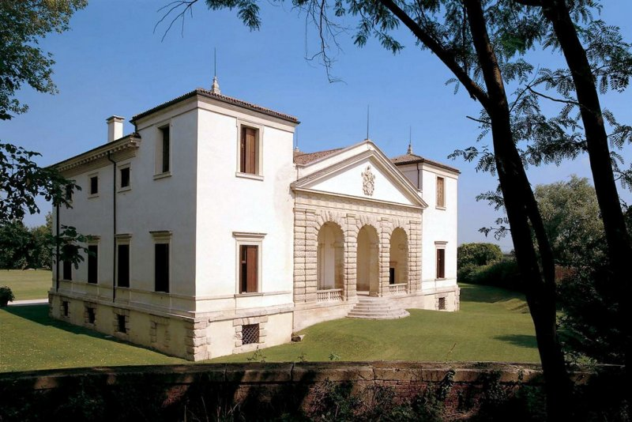
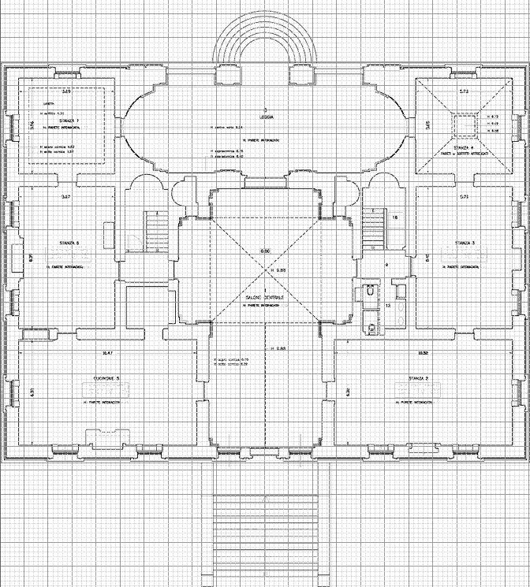

Villa Pisani Bonetti a Bagnolo di Lonigo
The Villa Pisani is a patrician villa designed by Andrea Palladio, located in Bagnolo, a hamlet in the comune of Lonigo in the Veneto region of Italy.
The Pisani were a rich family of Venetian nobles who owned several Villas Pisani, two of them designed by Andrea Palladio. The villa at Bagnolo was built in the 1540s and represents Palladio's first villa designed for a patrician family of Venice: his earlier villa commissions were from provincial nobility in the Vicenza area. The villa at Bagnolo was at the centre of an agricultural estate, as were most of the villas commissioned from Palladio. It was designed with rusticated features to complement its rural setting; in contrast, the Villa Pisani at Montagnana in a semi-urban setting utilizes more refined motifs.
The interior features a central T-shaped salone with barrel vaulting inspired by Roman baths; it is decorated with frescoes and lit through a big thermal window.
Source: Wikipedia
You can find a full description at Villa Pisani official site: www.villapisani.net
Modelling in plasm.js
I based most of my work on the ground floor plan, starting from outer walls, continuing with the entrance/facade, then passing to the interior and finally to roofs.
Thanks to the symmetry of the building I modeled half of it, then reflected it to obtain the whole villa.
I consecutively report some fragment of javascript code, supported by photos and screenshots.
Steps
ROTATIONAL_SURFACE proved useful in modelling front steps:
...
var hS = 0.14; //altezza scalini
var lS = 0.24; //larghezza scalini
var dominioScalini = DOMAIN([[0,1],[3*PI/2,2*PI]])([30,20]);
var puntiScalini = [[0,0,0],[1,0,0],[1,0,0],[1,0,-hS],[1,0,-hS],[1+lS,0,-hS],[1+lS,0,-hS],[1+lS,0,-2*hS],[1+lS,0,-2*hS],[1+2*lS,0,-2*hS],[1+2*lS,0,-2*hS],
[1+2*lS,0,-3*hS],[1+2*lS,0,-3*hS],[1+3*lS,0,-3*hS],[1+3*lS,0,-3*hS],[1+3*lS,0,-4*hS],[1+3*lS,0,-4*hS],[1+4*lS,0,-4*hS],[1+4*lS,0,-4*hS],
[1+4*lS,0,-5*hS],[1+4*lS,0,-5*hS],[1+5*lS,0,-5*hS],[1+5*lS,0,-5*hS],[1+5*lS,0,-6*hS]];
var nodiScalini = nodi(puntiScalini);
var profiloScalini = NUBS(S0)(2)(nodiScalini)(puntiScalini);
var mappaScalini = ROTATIONAL_SURFACE(profiloScalini);
var scalini = COLOR(cPietra)(MAP(mappaScalini)(dominioScalini));
...Squared back step required SIMPLEX_GRID and a NUBS surface for their frame:
...
var hS2 = 1.4/12 //altezza scalini
var lS2 = 0.284; //larghezza scalini
var scalinata = [];
for (var i = 0; i < 12; i++) {
scalinata[i] = SIMPLEX_GRID([[2.2],[-(18+(lS2*i)),lS2],[-(hS2*(11-i)),hS2]]);
};
var scalino1 = SIMPLEX_GRID([[2.2],[-16.6,1.4],[-1.4,hS]]);
var dominioScale = DOMAIN([[0,1],[0,1]])([20,20]);
var bordoScale1 = [[2.4,21.8,0],[2.4,21.8,hS2+0.02],[2.4,21.8,hS2+0.02],[2.43,21.8,hS2+0.02],[2.43,21.8,hS2+0.02],[2.43,21.8,hS2+0.05],[2.43,21.8,hS2+0.05],
[2.17,21.8,hS2+0.05],[2.17,21.8,hS2+0.05],[2.17,21.8,hS2+0.02],[2.17,21.8,hS2+0.02],[2.2,21.8,hS2+0.02],[2.2,21.8,hS2+0.02],[2.2,21.8,0],[2.2,21.8,0],[2.4,21.8,0]];
...
var nodiBordoScale1 = nodi(bordoScale1);
var profiloBordoScale1 = NUBS(S0)(2)(nodiBordoScale1)(bordoScale1);
...
var profiliBordoScale = [[2.3,21.8,hS2+0.05],profiloBordoScale1,profiloBordoScale1,profiloBordoScale2,profiloBordoScale2,profiloBordoScale3,profiloBordoScale3,profiloBordoScale4];
var nodiBordoScale = nodi(profiliBordoScale);
var bordoScale = NUBS(S1)(2)(nodiBordoScale)(profiliBordoScale);
var mappaBordoScale = MAP(bordoScale)(dominioScale);
...Finally they were assembled in a STRUCT:
...
var scalinate = STRUCT([scalini,COLOR(cIntonaco),T([2])([-(hS+1.4)]),STRUCT(scalinata),scalino1,mappaBordoScale]);
...Outer walls
The main structure is a simple sequence of SIMPLEX_GRID, used to model straight and windowed walls. Some more effort was needed for thermal windows: I used two functions to define straight and circular shaped curves and combined them in NUBS surfaces.
...
//quarto di cerchio di raggio r, traslato di ty, tz
function semicerchio (r,ty,tz) {
var funzione = function (p) {
var u = p[0] * PI/2;
return [r * SIN(u),ty,tz + r * COS(u)];
};
return funzione;
};
//segmento parallelo ad asse X
function segmento (lunghezza,ty,tz) {
var funzione = function (p) {
var u = p[0] * lunghezza;
return [u,ty,tz];
};
return funzione;
}
var dominioSemic = DOMAIN([[0,1],[0,1]])([20,20]);
//finestre semi-circolari
var semic1 = semicerchio(2.1,16.4,4.5);
var semic2 = semicerchio(1.8,16.4,4.5);
var semic3 = semicerchio(1.8,15.9,4.5);
var semic4 = semicerchio(2.1,15.9,4.5);
var segmento1 = segmento(2.1,16.4,6.6);
var segmento2 = segmento(2.1,15.9,6.6);
var curveSemic1 = [semic1,segmento1,segmento1,segmento2,segmento2,semic4];
var nodiSemic1 = nodi(curveSemic1);
var supSemic1 = NUBS(S1)(2)(nodiSemic1)(curveSemic1);
var mappaSemic1 = COLOR(cIntonaco)(MAP(supSemic1)(dominioSemic));
var curveSemic2 = [semic1,semic2,semic2,semic3,semic3,semic4];
var nodiSemic2 = nodi(curveSemic2);
var supSemic2 = NUBS(S1)(2)(nodiSemic2)(curveSemic2);
var mappaSemic2 = MAP(supSemic2)(dominioSemic);
...Facade
The prominent feature in the facade is the stone frame of the arcade. To model each stone I mixed straight, circular and point-defined curves in NUBS surfaces:
...
//funzione che genera archi di circonferenza di "gradi" radianti e ruotate di "alpha" radianti
function arcocerchio (r,ty,tz,gradi,alpha) {
var funzione = function (p) {
var u = alpha + p[0] * gradi;
return [r * SIN(u) , ty , tz + r * COS(u)];
};
return funzione;
};
...
//mattone G
var semic8 = arcocerchio(1,0.3,3,PI/13,PI/26);
var segmento6 = segmentoX(0.2,0.3,4.5,0.4);
var linea3 = [[0.2,0.3,4.5],[0.2,0.25,4.5],[0.25,0.2,4.5],[0.55,0.2,4.5],[0.6,0.25,4.5],[0.6,0.3,4.5]];
var nodiLinea3 = nodi(linea3);
var profiloLinea3 = NUBS(S0)(2)(nodiLinea3)(linea3);
var l3 = COS((PI/2)-(PI/26));
var l4 = COS((PI/2)-(PI/26)-(PI/13));
var h4 = 3+SIN((PI/2)-(PI/26)-(PI/13));
var linea4 = [[l3,0.3,4],[l3,0.25,4],[l3+0.03,0.2,4],[l4-0.03,0.2,h4],[l4,0.25,h4],[l4,0.3,h4]];
var nodiLinea4 = nodi(linea4);
var profiloLinea4 = NUBS(S0)(2)(nodiLinea4)(linea4);
var curveMatG = [semic8,profiloLinea4,profiloLinea3,segmento6];
var nodiMatG = nodi(curveMatG);
var supMatG = NUBS(S1)(2)(nodiMatG)(curveMatG);
var mattoneG = MAP(supMatG)(dominioMattoni);
...Interior
I decided to model only the upper floors' interior and not the basement's. I build most of it (walls, stairs, ...) using SIMPLEX_GRID but the central salone barrel vault:
...
//volta sala centrale
var dominioVolta = DOMAIN([[0,1],[0,1]])([20,20]);
//funzione che ruota di -45 gradi e trasla lungo y di 2.4 metri
function ruotaPunti (p) {
var a = -PI/4;
x = p[0];
y = p[1];
z = p[2];
x1 = x * COS(a) - y * SIN(a);
y1 = x * SIN(a) + y * COS(a);
return [x1,2.4+y1,z];
};
//semicerchio ruotato di 45 gradi e scalato di "scala"
function semicerchioR (r,scala) {
var funzione = function (p) {
var u = p[0] * PI/2;
var x = r * SIN(u);
var y = 0;
var z = r * COS(u);
return ruotaPunti([x,y,z*scala]);
};
return funzione;
};
var volta1 = semicerchio(2.4,0,0);
var raggio2 = 2.4 * Math.sqrt(2);
var volta2 = semicerchioR(raggio2,2.4/raggio2);
var curveVolta1 = [volta1,volta1,volta2];
var nodiVolta1 = nodi(curveVolta1);
var supVolta1 = NUBS(S1)(2)(nodiVolta1)(curveVolta1);
var mappaVolta1 = MAP(supVolta1)(dominioVolta);
var voltaCentrale = STRUCT([T([1,2])([6.4,4.5]),mappaVolta1,T([1])([4.8])(S([1])([-1])(mappaVolta1)),T([0,1])([2.4,2.4])(R([0,1])([PI/2])(mappaVolta1)),T([0,1])([2.4,2.4])(S([1])([-1])(R([0,1])([PI/2])(mappaVolta1)))]);
var volta3 = cilindro(2.4,1.2,PI/2,0);
var mappaVolta3 = MAP(volta3)(dominioCilindri);
var volta4 = cilindro(2.4,4.7,PI/2,0);
var mappaVolta4 = MAP(volta4)(dominioCilindri);
var volta5 = cilindro(2.4,1.2,PI,-PI/2);
var mappaVolta5 = MAP(volta5)(dominioCilindri2);
var volta = STRUCT([COLOR(cIntonaco),voltaCentrale,T([1,2])([6.4,4.5])(R([1,2])([PI/2])(mappaVolta3)),T([1,2])([15.9,4.5])(R([1,2])([PI/2])(mappaVolta4)),T([0,1,2])([3.6,8.8,4.5])(R([0,2])([-PI/2])(mappaVolta5))]);
...Roofs
To model roof surfaces I just used straight lines and points in NUBS, whereas for friezes between roofs and walls I chose the same technique used for capitals: define corner profiles by points and than join them in NUBS.
...
var hF = 2.2;
var fregio12 = [[0,0.3,5+hF],[0,0.2,5+hF],[0,0.2,5+hF],[0,0.1,5.2+hF],[0,0.1,5.2+hF],[0,-0.2,5.2+hF],[0,-0.2,5.2+hF],[0,-0.2,5.4+hF],[0,-0.2,5.4+hF],[0,-0.4,5.6+hF],[0,-0.4,5.6+hF],[0,0.3,5.6+hF]];
var fregio13 = [[5.5,0.3,5],[5.5,0.2,5],[5.5,0.2,5],[5.6,0.1,5.2],[5.6,0.1,5.2],[5.9,-0.2,5.2],[5.9,-0.2,5.2],[5.9,-0.2,5.4],[5.9,-0.2,5.4],[6.1,-0.4,5.6],[6.1,-0.4,5.6],[6.1,0.3,5.6]];
var fregio14 = [[5.5,0.3,5],[5.5,0.3,5],[5.5,0.3,5],[5.6,0.3,5.2],[5.6,0.3,5.2],[5.9,0.3,5.2],[5.9,0.3,5.2],[5.9,0.3,5.4],[5.9,0.3,5.4],[6.1,0.3,5.6],[6.1,0.3,5.6],[6.1,0.3,5.6]];
var nodiFregio12 = nodi(fregio12);
var supFregio12 = NUBS(S0)(2)(nodiFregio12)(fregio12);
var nodiFregio13 = nodi(fregio13);
var supFregio13 = NUBS(S0)(2)(nodiFregio13)(fregio13);
var nodiFregio14 = nodi(fregio14);
var supFregio14 = NUBS(S0)(2)(nodiFregio14)(fregio14);
var curveTetto9 = [supFregio12,supFregio13,supFregio13,supFregio14]; //frontone
var nodiTetto9 = nodi(curveTetto9);
var supTetto9 = NUBS(S1)(2)(nodiTetto9)(curveTetto9);
var mappaTetto9 = COLOR(cPietra)(MAP(supTetto9)(dominioTetto));
//timpano
var coefAng2 = hF/6.1;
var hT = coefAng2 * 5.1;
var fregio15 = [[5.2,0.3,6],[5.2,0.3,6.2],[5.2,0.3,6.2],[5.2,0.1,6.2],[5.2,0.1,6.2],[5.2,0.1,6.3],[5.2,0.1,6.3],[5.2,0.4,6.3],[5.2,0.4,6.3],[5.2,0.4,6]];
var fregio16 = [[0.1,0.3,6],[0.1,0.3,6.2+hT],[0.1,0.3,6.2+hT],[0.1,0.1,6.2+hT],[0.1,0.1,6.2+hT],[0.1,0.1,6.3+hT],[0.1,0.1,6.3+hT],[0.1,0.4,6.3+hT],[0.1,0.4,6.3+hT],[0.1,0.4,6]];
var nodiFregio15 = nodi(fregio15);
var supFregio15 = NUBS(S0)(2)(nodiFregio15)(fregio15);
var nodiFregio16 = nodi(fregio16);
var supFregio16 = NUBS(S0)(2)(nodiFregio16)(fregio16);
var curveTetto10 = [supFregio15,supFregio16,supFregio16];
var nodiTetto10 = nodi(curveTetto10);
var supTetto10 = NUBS(S1)(2)(nodiTetto10)(curveTetto10);
var mappaTetto10 = MAP(supTetto10)(dominioTetto);
...View the complete javascript code: model.js
Copyright note: photos and floor plans are taken from the web, all rights belong to their respective owners. I apologise for using them without authorization.